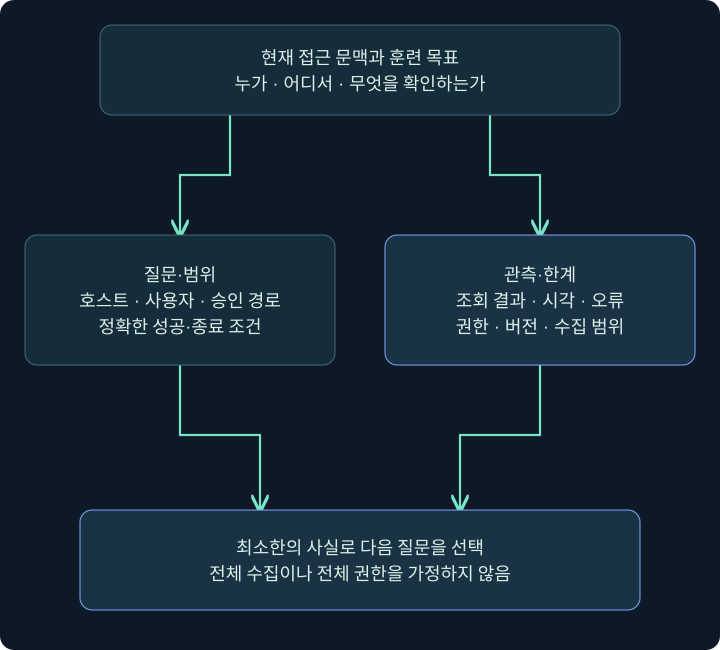
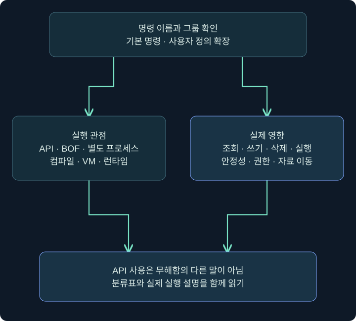
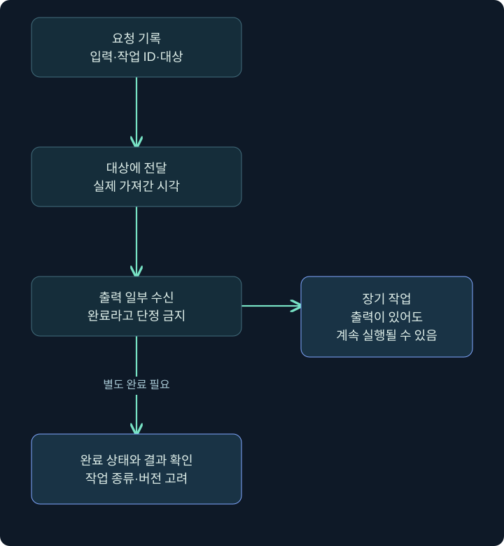

접근 후 상황 파악과 명령 동작: API·BOF·프로세스·작업 상태
실제 Sessions·콘솔에서 대상과 기본/확장 도움말을 읽고 실행 경계·안정성·출력·완료를 구별합니다.
1. 접근 뒤에는 무엇을 먼저 알아야 할까요?
문이 열렸다고 건물 구조를 아는 것은 아닙니다. 현재 방이 어디인지, 누가 사용할 수 있는지, 어떤 시설이 정상으로 돌아가는지 알아야 다음 행동을 판단할 수 있습니다. 접근 후 활동(Post-Exploitation)에서도 처음에는 상황 파악(Situational Awareness)이 필요합니다. 현재 호스트·사용자·프로세스·경로·환경과 훈련 목표 사이의 관계를 확인하는 과정입니다.
파일 하나를 발견했다고 목표 자료에 접근할 수 있다는 뜻은 아닙니다. 공유 경로가 보여도 읽기 권한이나 업무상 의미는 별도입니다. 실행 중인 보안 제품 이름도 정책·가동 상태·실제 탐지 범위를 모두 설명하지 않습니다. 이 장은 관측한 사실에서 어디까지 말할 수 있는지 구별하며 도구 사용을 설명합니다.
앞 장의 지속성은 재실행 조건에 관한 주제였습니다. 이번 장은 현재 실행 문맥에서 무엇을 조회하고 어떤 방식으로 작업이 수행되는가에 초점을 둡니다. 같은 명령 결과라도 API 호출·새 프로세스·인프로세스 실행처럼 내부 동작이 다르면 안정성·증거·부작용이 달라집니다.
2. 수집 전에 질문과 범위를 정하기
| 확인할 질문 | 필요한 최소 정보 | 그 정보만으로 알 수 없는 것 |
|---|---|---|
| 어느 컴퓨터인가? | 호스트명·주소·OS·대상 식별 | 같은 이름의 다른 호스트 여부 |
| 어느 사용자 문맥인가? | 사용자·SID·현재 토큰 정보 | 모든 자원에 대한 권한 |
| 현재 위치는 어디인가? | 작업 폴더·드라이브·경로 | 폴더 아래 모든 파일 내용 |
| 어떤 앱이 실행 중인가? | PID·경로·사용자·시각 | 앱 취약성·실제 정책 상태 |
| 어떤 실행 환경인가? | 셸·.NET 버전·아키텍처 | 모든 도구와의 호환성 |
| 무엇이 훈련 목표인가? | 합의한 검증 대상과 성공 조건 | 다른 사용자의 자료 수집 허가 |
처음부터 전체 디스크·모든 사용자·모든 화면을 수집하면 정보량과 노출 범위가 커집니다. 가상의 격리 VM LAB-PC, 사용자 student, 미리 만든 C:\Lab\TrainingOnly 폴더로 예를 한정하겠습니다. 실제 업무 경로·브라우저 저장 정보·개인 메시지는 예제 데이터로 사용하지 않습니다.
좋은 시작 질문은 이 폴더가 현재 사용자에게 보이는가?, 이 명령이 새 프로세스를 만드는가?처럼 결과를 확인할 수 있습니다. 시스템 전체를 알아보기처럼 끝이 없는 목표는 명령 선택과 종료 조건을 흐리게 합니다.

3. 대상과 명령 입력 위치 확인
실제 화면 44: 대상과 명령 입력 위치 확인
출처: Fortra Session and Target Visualizations. 공개 안내서 원본이며 화면 속 호스트·시간은 강의 가정과 다릅니다. 이미 허가된 실습 세션이 있다는 전제이고 새 에이전트를 설치한 결과가 아닙니다.
- 세션 표에서 현재 목표 호스트의 한 행만 선택합니다. Computer·User·주소·PID 등 보이는 정보를 기록합니다.
- 해당 행 우클릭 → Interact를 선택합니다. 여러 행을 선택하면 같은 작업이 여러 대상에 갈 수 있으므로 한 대상 학습과 구별합니다.
- 아래 열린 콘솔 탭과 상태 줄의 호스트·사용자·PID를 다시 확인합니다. Client 운영자 이름과 Windows 사용자 이름을 혼동하지 않습니다.
- 아래 입력 줄에
help를 입력하고 Enter를 누릅니다. 도움말을 읽는 단계와 대상에서 조회가 실행되는 단계는 다릅니다.
출처: Fortra Beacon Console. 사진에 이미 보이는 명령과 출력은 공식 예시입니다. 다음 절의 도움말을 여기서 직접 실행한 캡처가 아닙니다.
4. 도움말에서 기본 기능과 확장을 나누기
현행 도움말은 목록·그룹 표시와 기본/사용자 정의 명령 구분을 지원합니다. 같은 이름의 명령이 보여도 사용 중인 버전과 로드한 스크립트가 다르면 의미·인자가 달라질 수 있습니다. 블로그에서 본 한 줄을 설치 환경의 기본 기능으로 단정하지 않습니다.
help #groups @builtin
help #groups @userdefined
help pwd
help ps아래 beacon> 줄에 한 줄씩 입력하고 위쪽 설명의 이름·인자·반환·주의를 읽습니다. help ps는 프로세스 목록 자체를 가져오는 ps와 다릅니다. 명령을 설명하는 도움말이 나왔다고 조회가 수행됐다고 기록하지 않습니다.
| 도움말에서 볼 것 | 확인 목적 | 예 |
|---|---|---|
| 명령 그룹 | 기본·확장·분류 구별 | @builtin·@userdefined |
| 필수 인자 | 실제 문법 확인 | 경로·뷰·프로그램 이름 |
| 대상과 실행 위치 | Client·서버·대상 구분 | 로컬 도구 경로와 원격 파일 경로 |
| 출력 방식 | 반환·백그라운드·전용 탭 | 콘솔 출력과 Screenshots 구별 |
| 종료 조건 | 일회·장기 작업 구별 | 결과 완료와 작업 중지 |
도움말에 @native나 BOF 같은 분류가 보여도 그 분류만으로 읽기 전용·무해함을 뜻하지 않습니다. 분류와 실제 동작은 다른 축입니다.
5. 명령 동작을 네 관점에서 읽기
| 관점 | 설명 | 확인할 영향 |
|---|---|---|
| 상태·운영 명령 | 설정·목록·Client UI 등 관리 | 후속 작업 조건이 달라지는가 |
| Windows API 사용 | 운영체제 API로 기능 수행 | 파일·권한·통신·프로세스 변화 |
| Beacon 내부 실행 | 같은 프로세스에서 확장 코드 평가 | 오류가 현재 세션에 미치는 영향 |
| 별도 프로세스·주입 | 새 프로세스 또는 기존 프로세스에서 기능 수행 | 생성·적재·주입·출력·종료 증거 |
이 표는 사고를 정리하는 관점입니다. 서로 완전히 배타적인 공식 구현 분류표라고 보지 않습니다. BOF도 API를 호출하고, API를 사용하는 명령도 새 프로세스를 만들 수 있습니다. 실제 명령에 어느 경계가 있는지 따로 확인해야 합니다.
예를 들어 pwd는 현재 위치 조회이고 rm은 삭제입니다. 둘이 같은 Native 명령 표에 있어도 영향은 전혀 다릅니다. sleep은 상태 설정에 해당하지만 이후 응답 간격과 작업 완료 시점에 영향을 줍니다. ppid·spawnto도 단순 표시값이 아니라 이후 프로세스 실행 조건에 영향을 주는 설정입니다.

6. BOF와 fork-and-run은 어디가 다른가요?
Beacon Object File(BOF)은 Beacon이 정해진 규약에 따라 적재·실행하는 객체 코드입니다. 같은 프로세스 안에서 실행되는 코드는 별도 프로그램 창이 없어도 동작할 수 있습니다. 오류·메모리 손상·오래 걸리는 동작이 현재 프로세스에 영향을 줄 수 있다는 안정성 문제도 있습니다.
전통적인 fork-and-run 설명은 임시 프로세스를 만들고 후속 기능을 그 안에서 실행하여 출력을 돌려받는 패턴입니다. explicit 방식은 이미 존재하는 특정 프로세스를 대상으로 하는 패턴입니다. 새 프로세스가 있는지, 어느 PID에서 기능이 수행되는지, 출력 통로와 종료가 무엇인지로 구별합니다.
프로세스가 새로 생기지 않았다고 아무 동작도 없었다는 뜻은 아닙니다. 반대로 임시 프로세스가 생겼다고 모든 활동이 그 프로세스로 완전히 격리되는 것도 아닙니다. 권한·런타임·메모리·IPC·원래 세션 수명과 연결된 조건을 확인합니다.
7. 현행 4.13과 과거 설명을 대조하기
2026년 11월 4일 대조한 공식 문서는 4.13을 표시하며 Beacon Interpreter·BOF-PE 같은 실행 기능을 포함합니다. Interpreter는 Client에서 작성한 코드를 Team Server가 바이트코드로 컴파일하고 Beacon의 가상 머신이 해석하는 별도 경로입니다. 과거 네 분류가 앞으로 가능한 실행 방법 전부라고 가르치지 않습니다.
현행 Running Commands 표는 execute-assembly와 inline-execute를 Native에 표시하면서도 설명에서는 임시 CLR 프로세스·BOF의 인프로세스 실행을 각각 설명합니다. 표의 Type과 실제 실행 패턴을 동일한 말로 바꾸지 않는 것이 중요합니다. reg는 해당 표에서 BOF로 표시됩니다.
또한 beacon-interpreter-lint는 컴파일 오류를 확인하는 단계이며 대상에 코드를 보내 실행하는 beacon-interpreter와 다릅니다. 편집·검사·전달·실행의 경계를 구분하는 방법은 다른 도구에도 그대로 적용됩니다. 실행 엔진 비교는 5강에서 이어집니다.
8. 입력·전달·출력·완료는 다른 상태입니다

명령을 입력함은 요청 기록입니다. 대상이 작업을 가져감은 전달이며 출력 일부가 옴은 결과의 일부입니다. 별도 완료 상태와 실제 기대 결과까지 확인해야 수행이 끝났다고 말할 수 있습니다. 장기 작업은 출력이 와도 계속 실행될 수 있습니다.
현재 버전의 작업 상태 표시와 구버전 콘솔 문구는 다를 수 있습니다. 4.13 변경 이력에는 작업 완료 추적과 전사 기록 정비가 포함되어 있습니다. 과거 캡처의 성공 줄 하나를 새 버전의 모든 완료 조건으로 일반화하지 않습니다.
작업이 늦으면 응답 간격·연결·작업 종류·출력 통로를 먼저 확인합니다. 기다리는 동안 같은 명령을 반복 입력하면 작업이 중복될 수 있습니다. 단순히 잠시 조용하다는 이유로 실패·빈 결과·중지 완료라고 쓰지 않습니다.
9. 한 번의 조회를 기록하는 작은 예
가상의 운영 기록을 호스트 LAB-PC / 사용자 student / 세션 S-A / 명령 pwd / 입력 10:00 / 출력 10:00:08 / 결과 C:\Lab\TrainingOnly로 적어 봅시다. 이것은 현재 위치가 그 경로로 반환됐다는 예입니다. 폴더 내용·쓰기 권한·전체 파일 내용은 아직 확인하지 않았습니다.
다음 질문이 폴더 목록이라면 2강의 File Browser 또는 ls로 이어집니다. 질문이 실행 사용자라면 3강의 사용자·프로세스·레지스트리 조회로 이어집니다. 입력·화면 관측이 꼭 필요한 별도 학습은 4강에서 대상·범위·종료 조건을 분리합니다.
이 강의의 Cobalt Strike·Windows 절차는 미실행 안내입니다. 6강의 합성 이벤트 상태 계산만 실제 Python으로 검증합니다. 개념도와 실제 공식 화면, 예시 출력과 실제 측정을 문서에서 구별합니다.
10. 복습과 바로 읽는 해설
복습 1. 접근했으면 시스템 구조를 모두 아는 것인가요?
해설: 현재 호스트·사용자·경로·권한·목표와의 관계를 추가 확인해야 합니다. 접근과 상황 파악은 다른 단계입니다.
복습 2. 도움말 출력은 ps 수행 결과인가요?
해설: help ps는 문법 설명입니다. 실제 프로세스 조회인 ps와 구별합니다.
복습 3. 기본 명령과 사용자 정의 명령을 왜 나누나요?
해설: 이름이 비슷해도 로드한 확장과 버전에 따라 인자·구현·출력이 달라질 수 있습니다.
복습 4. API-only이면 무해한 조회인가요?
해설: 아닙니다. 파일 삭제·프로세스 실행도 API로 수행할 수 있습니다. 동작과 영향을 따로 봅니다.
복습 5. 인프로세스 실행은 안정성도 보장하나요?
해설: 오류가 같은 프로세스와 세션에 영향을 줄 수 있습니다. 별도 프로세스가 없다는 것과 안전성은 다릅니다.
복습 6. 네 분류로 모든 4.13 실행을 설명할 수 있나요?
해설: 개념 구분에 유용하지만 Interpreter·BOF-PE 같은 버전별 기능과 실제 실행 경로를 함께 확인해야 합니다.
복습 7. 출력 한 줄이 오면 작업이 종료됐나요?
해설: 장기 작업과 스트리밍은 계속될 수 있습니다. 완료 상태와 기대 결과를 별도로 확인합니다.
복습 8. 작업이 늦으면 바로 반복 입력하나요?
해설: 먼저 전달·연결·응답 상태를 봅니다. 반복 입력은 중복 작업을 만들 수 있습니다.
11. 공식 자료와 적용 범위
확인일: 2026년 11월 4일. 실제 제품·에이전트·Windows 조회는 수행하지 않았습니다. 공식 원본 화면의 버전·기존 결과와 강의 예를 구별했습니다.
- Fortra Beacon Console: 입력·상태·결과 위치.
- Fortra Running Commands: 도움말·분류·각 명령 계약.
- Fortra Beacon Interpreter: 편집·검사·컴파일·VM 실행 경계.
- Cobalt Strike Release Notes: 4.13 변경과 작업 상태 추적.
- Fortra Beacon Object Files: 확장 코드의 실행 규약.